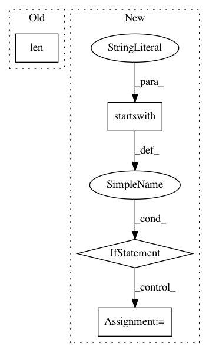

238e771db2b65917324d72acb3e94905c595a10a,utils/pcap_utils.py,,is_private,#Any#,8
Before Change
"""
if len(address) > 4:
pairs = address.split(".")
elif len(address) == 4:
pairs = address
private = False
After Change
elif pairs[0] == "192" and pairs[1] == "168": private = True
elif pairs[0] == "172" and 16 <= int(pairs[1]) <= 31: private = True
elif pairs[0] == "fe80": private = True
elif pairs[0].startswith("fd"): private = True
return private
def extract_macs(packet):
In pattern: SUPERPATTERN
Frequency: 4
Non-data size: 4
Instances
Project Name: CyberReboot/NetworkML
Commit Name: 238e771db2b65917324d72acb3e94905c595a10a
Time: 2018-07-17
Author: clewis@iqt.org
File Name: utils/pcap_utils.py
Class Name:
Method Name: is_private
Project Name: vatlab/SoS
Commit Name: 48c26c0eb5d972e965ff678a9014ca0004e6fa20
Time: 2016-12-03
Author: ben.bog@gmail.com
File Name: sos/jupyter/completer.py
Class Name: SoS_MagicsCompleter
Method Name: get_completions
Project Name: ina-foss/inaSpeechSegmenter
Commit Name: 688e56c09d028c0a956d1434ee16c60aea820de1
Time: 2018-04-19
Author: eliottlechapt@yahoo.fr
File Name: scripts/ina_speech_segmenter.py
Class Name:
Method Name:
Project Name: mynlp/ccg2lambda
Commit Name: 66a06524eba0b22d14204baeb2ca6d4c9db7d1d0
Time: 2017-05-12
Author: pascual@nii.ac.jp
File Name: scripts/semantic_types.py
Class Name:
Method Name: convert_coq_to_nltk_type